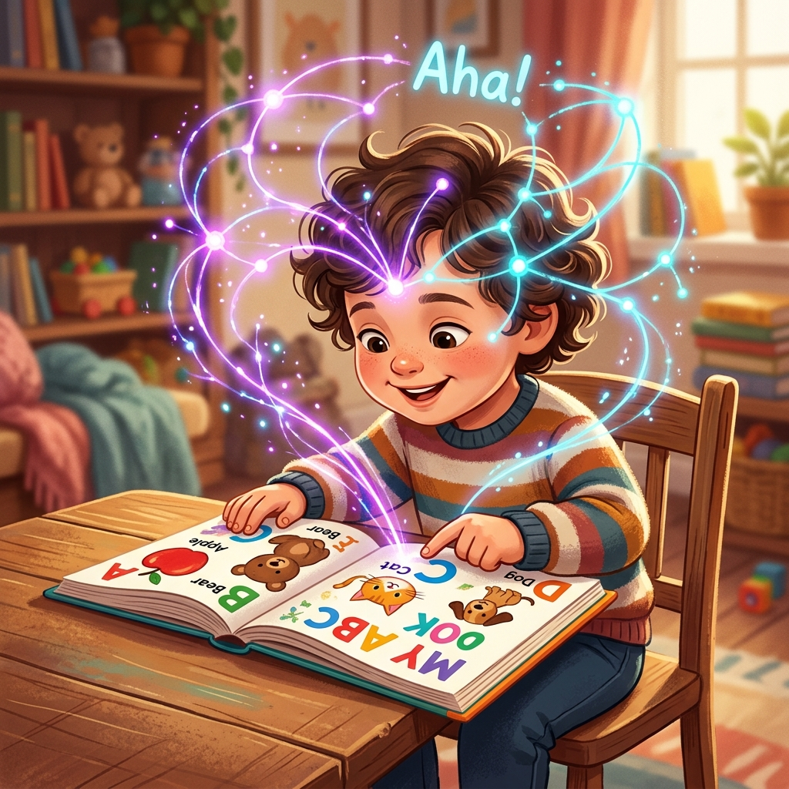

Phát Triển Tài Năng Và Trí Lực Con Trẻ
Shichida Makoto — Giáo dục sớm đánh thức thiên tài trong con

Nuôi dưỡng nền tảng năng lực tư duy cho trẻ

Thời lượng đọc sách: ~35 phút (tương đương 9,500 từ) |
Độ khó học thuật: Nâng cao (Tâm lý học thần kinh & Giáo dục toán sớm)
Khái niệm cốt lõi: Hệ tín hiệu thứ hai, Quy luật Myelin hóa 3 tháng, Thực nghiệm Steinberg, Tráo thẻ Hiragana 10 ngày, Dot Cards 65 ngày, 6 năng lực đặc biệt Shichida
Sơ đồ Hệ thống phát triển tư duy
Tóm tắt Cấu trúc Chương 4
Cốt lõi trong một câu: Sự phát triển trí lực và tư duy chiều sâu của trẻ không phải do di truyền định đoạt, mà được quyết định bởi việc thiết lập sớm Hệ tín hiệu thứ hai thông qua giáo dục ngôn ngữ (đọc sớm) và toán học trực giác (dot cards) trước 6 tuổi.
Vấn đề đặt ra (The Setup): Quan niệm truyền thống cho rằng trẻ phải nói sõi mới học đọc và đi học mới học toán đã bỏ lỡ giai đoạn vàng từ 0-3 tuổi. Việc cấm đoán, đe dọa hoặc phó mặc trẻ cho tivi CRT làm thui chột thùy trước trán (frontal lobe) và cản trở myelin hóa neuron.
Luận điểm chính (The Argument): Kỹ năng quyết định cấu trúc não bộ. Việc dạy chữ và lượng chấm sớm tạo ra rãnh thị giác ưu việt, thúc đẩy hàng trăm kích thích liên tục để hình thành mô bao thần kinh. Nuôi dạy trẻ bằng "Bốn Tay" (Tình yêu, Chăm bẵm, Ngôn ngữ, Khen ngợi) kết hợp vận động đu xà đơn và rèn kể chuyện sẽ khai mở 6 tiềm năng não phải đặc biệt.
Bằng chứng hỗ trợ (The Evidence): Trị liệu tổn thương não của Tiến sĩ Glenn Doman, thực nghiệm dạy bé K đọc chữ trước khi nói của Steinberg (đạt trình độ lớp 12 lúc 11 tuổi), lớp dạy Kanji 3-4 tuổi của Isao Ishii, bé Kono học Hiragana trong 10 ngày và phác đồ 65 ngày dot card.
Ý nghĩa thực tiễn (The Implications): Dán Alphabet và lưới 100 số quanh cũi từ 6 tháng tuổi; flash thẻ dot card hằng ngày; dạy trẻ so sánh to/nhỏ, dài/ngắn; cho bé đu xà đơn 1 phút/ngày; yêu cầu trẻ 2-3 tuổi kể lại câu chuyện vừa nghe và hướng dẫn trẻ 3 tuổi tự tra từ điển.
Ý tưởng chủ đạo
Bài học then chốt
Ứng dụng: Dán bảng chữ cái từ 6 tháng, chỉ và đọc to. Dùng thẻ từ đơn tráo thẻ (BOY, GIRL, CAR). Trẻ chỉ tay vào thẻ đúng để chứng minh khả năng đọc hiểu trước khi biết nói.
Lưu ý (Caveat): Không dạy viết chữ song song với dạy đọc ở tuổi này để tránh gây quá tải cơ tay cho trẻ.
Ứng dụng: Thiết lập các bài kiểm tra trắc nghiệm thực tế trong sinh hoạt (so sánh số lượng bi ở 2 bát, xếp bút chì dài ngắn khác nhau, xác định búp bê đứng trước/sau).
Lưu ý (Caveat): Tránh nhồi nhét các phép tính viết khô khan; thay vào đó hãy sử dụng thẻ chấm (dot card) để rèn khả năng chụp ảnh lượng của não phải.
Ứng dụng: Duy trì một lộ trình học chữ cái, tráo thẻ hay vận động liên tục 3 tháng, chấp nhận "đường cong trưởng thành" phẳng lì ở thời gian đầu trước khi trẻ bùng nổ vượt trội.
Lưu ý (Caveat): Việc bỏ cuộc giữa chừng sau vài tuần học vì thấy trẻ "không phản ứng" sẽ làm đứt gãy quá trình hình thành mô bao thần kinh.
Ứng dụng: Bố trò chuyện, xoa bụng và đọc ehon cho bé trong bụng từ tuần 20. Khen ngợi hành động cụ thể của trẻ khi lớn thay vì khen ngợi chung chung dễ tạo sự tự kiêu.
Lưu ý (Caveat): Thiếu bất kỳ tay nào trong 4 tay trên (đặc biệt là tay ngôn ngữ và khen ngợi) đều làm giảm sút nghiêm trọng chất lượng phát triển trí lực của trẻ.
Nền tảng tri thức & Bối cảnh
Liệu pháp Glenn Doman (Hoa Kỳ)
Tiến sĩ Glenn Doman nghiên cứu điều trị cho trẻ tổn thương não, phát hiện ra kỹ năng vận động và ngôn ngữ thay đổi cấu trúc sọ và kích thước não bộ. Ông đưa ra luận điểm: "kỹ năng quyết định cấu tạo", dạy trẻ Down 3 tuổi đọc trôi chảy 3 ngoại ngữ. Ch 4 · §1
Thực nghiệm Steinberg & Bé K
Giáo sư Steinberg thực nghiệm dạy con trai K đọc chữ Alphabet từ 6 tháng tuổi bằng thẻ đỏ nổi bật. Cậu bé đạt trình độ đọc lớp 3 lúc 4 tuổi, lớp 12 lúc 11 tuổi và đọc tiểu thuyết 200 trang trong 2 tiếng, chứng minh hiệu quả của việc dạy đọc trước khi dạy nói. Ch 4 · §1
Chữ Hán của Isao Ishii
Chuyên gia Isao Ishii chứng minh trẻ 3-4 tuổi tiếp nhận Kanji dễ dàng bằng hình ảnh chụp thùy phải, trong khi trẻ 6-7 tuổi học Kanji gặp nhiều khó khăn do cơ chế logic ghép âm chiếm ưu thế. Khả năng nhớ chữ tỉ lệ nghịch với độ tuổi bắt đầu. Ch 4 · §1
Hệ tín hiệu thứ hai (Pavlov)
Học thuyết Pavlov phân biệt: Hệ tín hiệu thứ nhất là các kích thích vật lý (ăn uống, vận động cơ bản có ở động vật). Hệ tín hiệu thứ hai là các kích thích ký hiệu (ngôn ngữ, chữ viết, toán học chỉ có ở người). Giáo dục sớm nhằm kích hoạt sớm hệ thống tư duy cao cấp này. Ch 4 · §1
Khung nhận thức & Mô hình
Mô hình 1: Hệ tín hiệu thứ hai (The Second Signal System)
- Dán bảng chữ cái và lưới 100 số quanh cũi để trẻ tiếp xúc thị giác trực quan hằng ngày.
- Trò chuyện bằng ngôn ngữ chuẩn của người lớn ("con chó") thay vì ngôn ngữ nựng nịu ("con cún/gâu gâu").
- Không được nhầm lẫn giữa dạy đọc ký hiệu trực quan với việc ép làm toán trừu tượng khô khan. Trẻ cần liên kết ký hiệu với hình ảnh và trải nghiệm thực tế.
Mô hình 2: Hấp thụ Kanji hình ảnh (Photographic Language Absorption)
- Dạy từ đơn nguyên bản (BOY, GIRL, CAR) trực tiếp qua thẻ chữ, không cần dạy ghép chữ cái trước.
- Dùng thẻ Hiragana Shichida tráo thẻ trong 10 ngày để chụp ảnh toàn bộ bảng chữ cái.
- Tránh kiểm tra trẻ bằng cách hỏi dồn dập khiến trẻ phản kháng. Hãy chơi trò chơi vui vẻ, để trẻ tự chỉ tay lựa chọn.
Giáo dục sớm vs. Giáo dục tự nhiên
So sánh các phương pháp dạy chữ và toán theo lối tự nhiên truyền thống với phương pháp giáo dục sớm Shichida/Steinberg:
| Tiêu chí so sánh | Phương pháp Tự nhiên truyền thống | Phương pháp Giáo dục sớm (Khuyên dùng) |
|---|---|---|
| Thời điểm dạy đọc | Chờ biết nói sõi, khoảng 4-6 tuổi mới ghép chữ | Dạy từ 6 tháng tuổi bằng thẻ từ trực quan; đọc trước khi nói |
| Thời điểm dạy viết | Dạy song song với đọc lúc nhỏ | Tuyệt đối không dạy viết trước 4-5 tuổi (chờ cơ tay hoàn thiện) |
| Phương pháp dạy toán | Đếm vẹt số ký hiệu trừu tượng (1, 2, 3...) | Dạy lượng chấm (Dot Card) từ 6 tháng & Phép toán tưởng tượng |
| Cách sử dụng từ vựng | Dùng tiếng nựng trẻ con ("cún cún", "gâu gâu") | Dùng tiếng chuẩn của người lớn ("con chó") để tránh đổi từ sau này |
| Khen ngợi trẻ | Khen kết quả chung chung ("Con tuyệt vời lắm") | Khen ngợi nỗ lực và hành động cụ thể ("Con tự xếp đồ chơi tốt lắm") |
Nghiên cứu khoa học & Cột mốc
Các sai lầm cha mẹ cần tránh
Phác đồ rèn luyện 0-3 tuổi
Lộ trình các hoạt động rèn luyện tư duy và thể chất cho trẻ từ 0-3 tuổi:
| Hoạt động giáo dục | Mục tiêu cốt lõi | Cách thức triển khai | Điểm cần đặc biệt lưu ý |
|---|---|---|---|
| Đọc thẻ Alphabet & Sách tranh (Từ 6 tháng) | Tạo rãnh thị giác ưu việt, tích lũy 1000-2000 từ vựng nền tảng | Dán chữ đỏ Alphabet cạnh giường, đọc to chỉ tay. Đọc sách tranh chầm chậm cho con nghe hằng ngày. | Chỉ và hỏi trẻ chỉ tay xác nhận; không mắng hay tạo áp lực bắt trẻ đọc thuộc lòng. |
| Tráo thẻ Dot Card & Lưới số (Từ 6 tháng) | Kích hoạt trực giác toán học não phải, tính toán tốc độ cao | Dán bảng 1-100 số lên tường đọc hằng ngày. Thực hiện lộ trình 65 ngày dot card tráo thẻ cực nhanh. | Tráo nhanh dưới 1 giây/thẻ. Không giải thích logic; để não phải tự chụp ảnh lượng chấm. |
| Đu xà đơn & Vận động (Từ 2 tuổi) | Phát triển lồng ngực, gân cốt và rèn tính kiên nhẫn vượt trội | Tập chạy bộ tăng dần cự ly (10m, 20m). Đu xà đơn 1 phút/ngày, hướng dẫn đan chéo tay di chuyển. | Cha mẹ phải luôn giám sát an toàn. Khuyến khích trẻ thử thách bản thân tăng dần độ khó. |
| Kể lại truyện & Tra từ điển (Từ 2-3 tuổi) | Rèn thùy trước trán, năng lực diễn đạt logic sâu sắc | Yêu cầu trẻ 2-3 tuổi kể lại câu chuyện mẹ vừa đọc. Cho trẻ 3 tuổi tự tra từ điển tìm ý nghĩa Kanji. | Để trẻ tự tra cứu và mày mò (như dùng bản đồ tìm đường) thay vì cha mẹ trả lời hộ ngay lập tức. |
Lời tác giả - Nguyên văn
"Kỹ năng sẽ quyết định cấu tạo và sự phát triển của não trẻ... Việc dạy chữ nghĩa sẽ làm thay đổi chức năng của não bộ, chức năng thay đổi sẽ kéo theo cấu tạo của não bộ cũng thay đổi. Hiện tượng này thể hiện càng rõ với trẻ khi còn nhỏ."
— Shichida Makoto, giải thích về cơ chế Neuroplasticity của đại não trẻ thơ. Ch 4 · §1
"Nếu trẻ không hiểu ngôn ngữ, thì việc dạy toán học cho trẻ là điều không thể... Do đó, dạy cho trẻ hiểu được ý nghĩa của thật nhiều từ ngữ có liên quan đến toán học chính là cơ sở để dạy toán học cho trẻ."
— Shichida Makoto, lý giải mối quan hệ hữu cơ giữa ngôn ngữ và toán học. Ch 4 · §2
"Cột trụ trong phương pháp giáo dục trẻ đó là phải giáo dục ngôn ngữ, nếu không trẻ sẽ không thể đạt đến sự phát triển sâu sắc về tinh thần được... Trí tuệ và tài năng có thể phát triển được hay không là nhờ vào việc tự thể nghiệm đúc kết của bản thân thông qua quá trình đọc sách mà thôi."
— Shichida Makoto, nhấn mạnh vai trò độc tôn của ngôn ngữ và thói quen đọc sách. Ch 4 · §1
Phân tích 5 tầng nhận thức
Lớp 1: Đọc Bề Mặc (Surface)
Nội dung: Hướng dẫn lộ trình chi tiết dạy đọc chữ (thẻ Hiragana 10 ngày), học ngôn ngữ toán học so sánh, tráo thẻ Dot Card 65 ngày và 20 phương pháp phát triển trí lực từ 0 tuổi.
Lớp 2: Đọc Cấu Trúc (Structural)
Lập luận: Tác giả kết nối chặt chẽ giữa kích thích giác quan (thị giác, thính giác) với sự phát triển vật lý của não bộ (tăng thể tích sọ, quá trình myelin hóa liên kết neuron trong 3 tháng) để làm cơ sở khoa học cho giáo dục sớm.
Lớp 3: Đọc Bối Cảnh (Contextual)
Bối cảnh xã hội: Phản ánh thời kỳ tivi CRT bùng nổ tại Nhật Bản, các gia đình lạm dụng tivi để trông trẻ, dẫn đến cảnh báo của Shichida về sự tàn phá thùy trước trán và gia tăng chứng tự kỷ ở trẻ nhỏ.
Lớp 4: Đọc Phản Biện (Critical)
Điểm yếu học thuyết: Việc tráo thẻ Dot Card và Hiragana cơ học dễ bị biến tướng thành rèn luyện phản xạ vẹt (não trái) nếu thiếu đi "Tay tình yêu" và các hoạt động trải nghiệm thực tế ngoài tự nhiên dã ngoại.
Lớp 5: Đọc Sáng Tạo (Generative)
Ý tưởng mới: Thiết kế "Lưới từ vựng gia đình" kết hợp dán nhãn thông minh các vật dụng trong nhà bằng chữ in đỏ lớn, kết hợp tổ chức trò chơi truy tìm kho báu để trẻ nhận diện mặt chữ tự nhiên qua vận động.
Kiểm định khoa học & Rủi ro tâm lý
Xác thực 2026: Thần kinh học xác nhận khái niệm "Brain Plasticity" (Tính dẻo của não). Kích thích thị giác và ngôn ngữ sớm làm tăng mật độ chất xám, đẩy nhanh tốc độ myelin hóa (myelination) các bó sợi thần kinh kết nối vùng thị giác (chẩm) với vùng ngôn ngữ (Wernicke/Broca), tối ưu hóa tốc độ xử lý thông tin. Tuy nhiên, việc tăng xương sọ gấp 3-4 lần là sự mô tả cường điệu hóa về mặt sinh học.
Xác thực 2026: Tivi CRT đã lỗi thời, nguy cơ từ tia âm cực và máu trắng không còn phù hợp. Tuy nhiên, cảnh báo cốt lõi vẫn hoàn toàn đúng: Hiệp hội Nhi khoa Hoa Kỳ (AAP) xác nhận việc trẻ dưới 2 tuổi tiếp xúc với màn hình kỹ thuật số (Smartphone, Tablet) làm suy giảm thùy trước trán (frontal lobe) do kích thích ánh sáng xanh quá nhanh, gây mất khả năng tập trung sâu, cản trở phát triển ngôn ngữ hai chiều và gia tăng các triệu chứng "tự kỷ ảo" (virtual autism).
Thử thách học thuyết Shichida
• Dạy đọc từ 6 tháng bằng tráo thẻ Alphabet, từ đơn và dot cards để kích hoạt thùy phải chụp ảnh thông tin siêu tốc trước khi não hoàn thiện 80% lúc 6 tuổi.
• Tận dụng thời kỳ ham học hỏi lớn nhất của trẻ để tích lũy tối đa vốn ký hiệu ngôn ngữ và tư duy.
• Waldorf Education: Phản đối nghiêm ngặt việc dạy chữ và toán trừu tượng trước 7 tuổi. Trẻ nhỏ cần học thông qua trải nghiệm giác quan, trò chơi tự do ngoài thiên nhiên và bắt chước hành vi.
• Rủi ro xơ cứng tư duy: Nhồi nhét ký hiệu quá sớm làm trẻ bị xơ cứng thùy trước trán, tiêu hao năng lượng sống tự nhiên và hạn chế khả năng sáng tạo nghệ thuật độc lập.
Lộ trình hành động chi tiết
1. Kích hoạt rãnh thị giác
• Dán bảng chữ cái màu đỏ và lưới 100 số quanh cũi trẻ từ 6 tháng. Chỉ tay đọc to 4-5 lần/ngày (<1 phút/lần).
• Tráo thẻ từ đơn (BOY, CAR) kết hợp chỉ tranh để trẻ nhận diện từ qua thị giác trước khi biết nói.
2. Dạy Hiragana & Ngôn ngữ toán
• Áp dụng quy trình Hiragana 10 ngày Shichida: nhóm 5 chữ cái/ngày, ôn tập đố tìm chữ vui vẻ.
• Dạy các từ so sánh (nhiều/ít, to/nhỏ, dài/ngắn, trước/sau) bằng hiện vật trực quan trong nhà.
3. Phát triển thùy trước trán
• Bắt đầu lộ trình Dot Card 65 ngày (6 chu kỳ) từ phép cộng, trừ đến toán hỗn hợp và phép tính tưởng tượng.
• Cho con chạy bộ và đu xà đơn 1 phút/ngày. Yêu cầu trẻ kể lại câu chuyện vừa nghe và dạy trẻ tự tra từ điển.
Bản đồ liên kết tri thức
- Khái niệm tiên quyết: Không thể học toán nếu chưa tích lũy đủ ngôn ngữ. Ngôn ngữ so sánh (to/nhỏ, nhiều/ít) chính là chiếc cầu nối bắt buộc để trẻ bước vào thế giới số học Dot Cards.
- Khái niệm mở khóa: Thói quen tự tra từ điển và rèn kể lại câu chuyện khi 2-3 tuổi sẽ mở khóa năng lực tư duy logic sâu sắc của thùy trước trán, giúp chỉ số IQ phát triển vượt trội.
Đối thoại Socratic & Kết nối nội tâm
Phương pháp học tập tối ưu
Trải nghiệm thực tế (Experiential)
Đưa con đi dạo thiên nhiên hằng ngày, vừa đi vừa trò chuyện về sỏi đá, cây cỏ. Hãy biến mọi sự vật ngoài đời thực thành bài học so sánh to/nhỏ, dài/ngắn để trẻ thấu hiểu ngôn ngữ toán học trực quan nhất. Ch 4 · §3
Chia nhỏ buổi học (Micro-Sessions)
Tuyệt đối không dạy học quá lâu. Mỗi buổi học thẻ hay dot card chỉ kéo dài 2-3 phút, chia làm 3-4 lần/ngày. Giữ cho trẻ luôn ở trạng thái "thèm học" và kết thúc buổi học trước khi trẻ có dấu hiệu chán nản. Ch 4 · §1
Tự kiến tạo bản đồ tri thức (Mapping)
Thay vì trả lời hộ con ngay lập tức khi con hỏi "Đây là chữ gì?", hãy dạy trẻ 3 tuổi cách tự tra cứu từ điển bằng tranh dành riêng cho trẻ. Việc tự mò đường giúp mạng lưới liên kết neuron thần kinh ghi nhớ sâu sắc hơn. Ch 4 · §3
Cam kết hành động cụ thể
-
Thiết lập môi trường Alphabet và số học trực quanDán bảng chữ cái in đỏ lớn và lưới số 1-100 lên tường cũi của trẻ từ 6 tháng tuổi. Chỉ tay đọc to 4-5 lần/ngày, mỗi lần không quá 1 phút. Nói tiếng chuẩn của người lớn. Ch 4 · §1 & §2
-
Triển khai lộ trình tráo thẻ Dot Card 65 ngày liên tụcChuẩn bị bộ thẻ chấm từ 1-100 và thực hiện tráo thẻ nhanh (<1 giây/thẻ) theo lộ trình phép cộng, trừ, nhân, chia. Duy trì tối thiểu 3 tháng để hoàn tất myelin hóa neuron thần kinh. Ch 4 · §3 & §4
-
Tích hợp đu xà đơn và rèn trẻ kể lại câu chuyện hằng ngàyCho trẻ đu xà đơn 1 phút/ngày để phát triển khung xương và tính nhẫn nại. Khi trẻ 2-3 tuổi, luyện thói quen yêu cầu trẻ kể lại câu chuyện mẹ vừa đọc để kích hoạt thùy trước trán. Ch 4 · §3